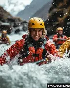

Our Rafting Team

Our purpose is to provide safe, exciting, and unforgettable white-water rafting adventures. We value adventure, courage, safety, teamwork, and a passion for nature. Our promise is to make every rafting experience fun, memorable, and enjoyable for everyone. Motto: “Ride the Rapids. Live the Adventure!”